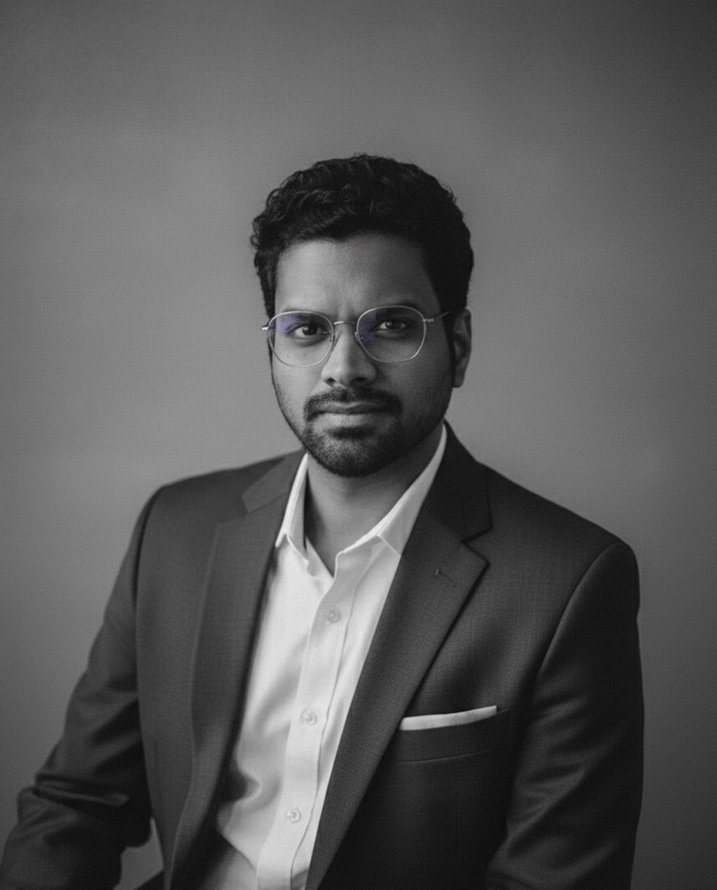

About
Solutions architect working on real-time data platforms and agentic AI in financial services.
Profile

Add photoimages/portrait.jpgProfessional headshot, portrait orientation
I've spent more than 17 years on the middle layer of large systems: integration, middleware, caching and real-time data. That work began in consulting. At Cognizant (2009–2016) I was architect and global development lead for UPS's middleware, with a 30+ person team across the USA, Canada and India, and led architecture teams for healthcare clients including UnitedHealthcare, Anthem (formerly WellPoint) and CareCentrix. At Capgemini (2016–2018) I led a 55+ person team on the Synchrony Financial account through application lifecycle management and cloud migration, work that led to Synchrony inviting me to join full time.
Since 2018 I have been at Synchrony, now as VP, Solutions Architect, leading a 60+ person global team across three areas: the real-time data caching platform, the rewards platform behind Synchrony's credit card rewards programs across its clients, and a team that adopts new technology in response to client requirements. The caching platform began as an idea while Synchrony was planning its move to the cloud, where caching was the clearest way to improve response time and control cost. It went into production in 2020 and now serves more than 10 billion API data requests a month at about 20 ms on average, with $12–15M in annual cost avoidance.
My current focus is what changes when AI agents, not people, are the ones calling these systems. I developed PACE (Progressive Autonomy, Auditability by Design, Controlled Boundaries, Ecosystem Integration), a framework for letting AI agents earn autonomy gradually in regulated financial environments. I've published research on agentic caching, agentic commerce and AI-driven loyalty, and in 2026 gave keynotes at CIS 2026 and ICIEEE-2026 and joined an industry panel on agents in the enterprise at COLLIDE Atlanta.
Alongside that work, I organize Synchrony's Atlanta hub for its internal Agentic AI and MCP hackathons, which draw 600+ participants each, and serve as a judge and team mentor, after competing as a finalist in 2025. I have completed around 120 peer reviews across 29 conferences and journals, serve on Technical Program Committees including IEEE IEMCON, and mentor professionals through ADPList and students at Kennesaw State University.
Career
- 2022–now
VP, Solutions Architect
Synchrony Financial
- 2018–2022
AVP, Solutions Architect
Synchrony Financial
- 2016–2018
Senior Consultant
Capgemini, engaged on the Synchrony Financial account
- 2009–2016
Project Lead Developer
Cognizant. Healthcare integration and UPS middleware.
Education
- 2025
Post Graduate Program in Artificial Intelligence & Machine Learning: Business Applications
McCombs School of Business, The University of Texas at Austin, delivered with Great Learning
Bachelor of Engineering
Anna University, Chennai
Memberships and recognition
- IEEE Senior Member
- SAS Eminent Fellow Membership (SEFM)
- IETE Fellowship (FIETE)
- Judge, 2026 Globee® Awards for Innovation
- 2025 Synchrony CEO Award